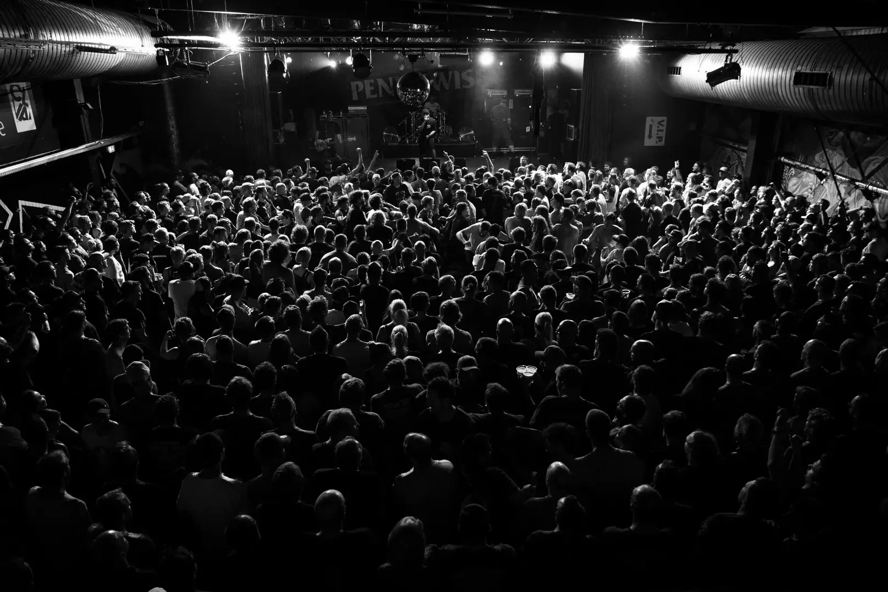

02C · Paper / Signal

Arbeit,
die man
merkt.
Helle Editorial-Fläche, echtes Gesicht, Forest als Gegenpol und Violet nur an den Stellen, die führen sollen.
WolfTon · Licht · Stage
FranzHolz · Sonderbau
RegionBodensee

Schwarze Fläche, ein klarer Violet-Impuls, das Bild als Material. Reduziert – aber nicht leise.
Das FraWo Forest als vollflächige Bühne. Violet bleibt als Rahmen und Energie sichtbar, ohne in Neon oder Spielerei abzurutschen.
Helle Editorial-Fläche, echtes Gesicht, Forest als Gegenpol und Violet nur an den Stellen, die führen sollen.
Die Varianten verändern die Wirkung durch Fläche, Kontrast und Bildbehandlung – nicht durch zusätzliche Dekoration.